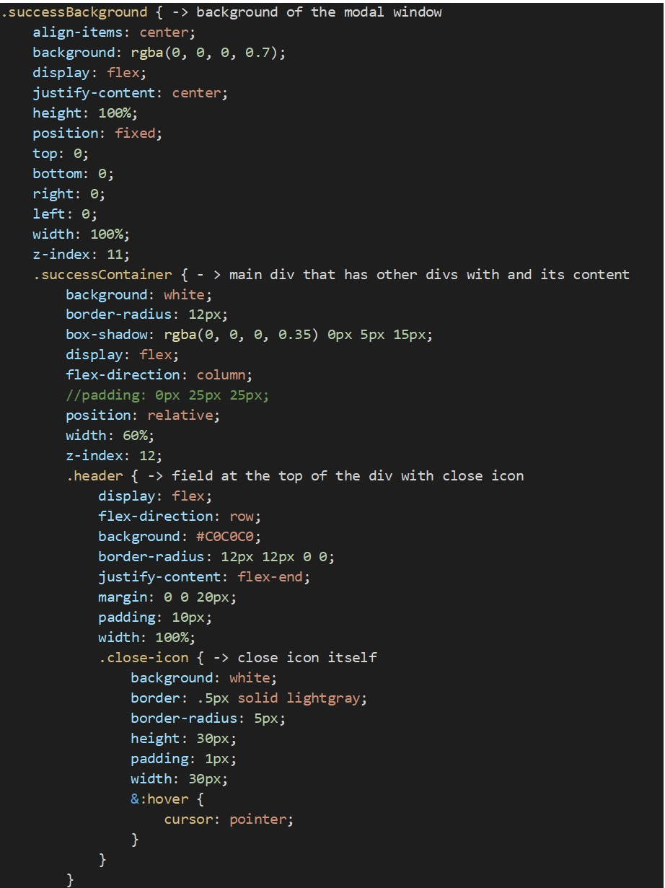

Nowadays at my current job I am developing application for registration of citizens at the place of residence and their family ties. One of my last tasks was to create a modal window which show that kinship to the particular citizen record was successfully added. Today I will describe the process of creating such a modal window in this application using Redux.
1. The page of application with particular citizen’s record has the interface as it shown on the picture. With blue color is distinguished a button for adding a kinship.
2. By pushing the button distinguished with blue color there appears a modal window with a number of fields. To the field matched with blue we print a surname of person whom we want to connect. Next time I will describe how I have created this window and its functionality with react-select and redux. For now, let me show it just for demonstration.
3. After filling all the necessary data, we push the button ‘Save’ (surrounded by blue color), application sends a ‘POST’ request to the server and in case of success we can see the modal window with picture that everything is ok.

4. Modal window with the picture, that everything is ok and connection was successfully added.
5. To create this modal window, first of all, lets create component for modal window itself. The final version of this component is described lower:
6. Next: styles that I added to this component. I use SASS in this application so my file with styles is called _successcreatecitizenconnection.scss:
7. Next step, we need to export component with modal window to the another component which is named ‘Citizen.js’ (How it looks in application you can see at the picture № 1).
My component Citizen.js is pretty complicated, so for now I will only describe the part with redux and rendering of the modal window. In this application I use "react-redux": "^8.0.0" and "redux": "^4.1.2", so for later versions of Redux this tutorial might be not suitable.
8. To make redux be able managing the data and the state of our application we need to add following code to the index.js file:

9. One of the necessary parameters for the store is reducer. Reducers are pure functions that will receive an initial state and an action, perform a logic based on this action, and return a new state. Also, it should be noted, that createStore, that we use to hold our store, allows only two parameters. Further we will need to add more logic due to that fact. Before we create a reducer, lets determine our actions. Actions are events that our components will invoke to let the rest of the application know that we want to update some state (Action is an object that describes what is going to happen). To hold all the actions in one folder we create ‘actions’ folder. In this folder we create a file actions.js. In our action.js file let’s create two actions:

10. Then let’s create a particular folder and name it ‘reducers’. In this folder we create a root file ‘index.js’ to which we will export all reducers, that we will have in our application. Also, in the ‘reducers’ folder let’s create reducer for our modal window and name it successCreateCitizenConnectionReducer.js. Depending on type of the action, reducer will change the state and show or hide a modal window.
11. Then we need to import successCreateCitizenConnectionReducer to the index.js file where we will add to allReducers using combineReducers. combineReducers is necessary if we have multiple reducers in the application. As I have multiple reducers in my application, I add combieReducers. Lately I can add any quantity of reducers to my application using combineReducers. We export allReducers to the index.js file in which we have wrapped our App component with Provider.

12. Now about the code, distinguished by violet color in our modal window component:

Dispatch sends the ‘type’ of action to the reducer and reducer modifies the state based on type of action. In this our case we have closeSuccess action. If we look at closeSuccess: It has a type: ‘CLOSE_SUCCESS’. And in our reducer successCreateCitizenConnectionReducer when the type of action is ‘CLOSE_SUCCESS’ our successCreateCitizenConnectionReducer returns state equal to false and close the modal window. Then we add dispatch and closeSuccess action to our onClick function. So now, when we push close icon, our reducers change our state to false and close the modal window.
13. As the store can get only two parameters, we added some more code to the index.js file to our store:

In order to be able work with asynchronous JS code in redux we need to install and use ‘redux-thunk’ as basically redux have no functionality to work with asynchronous JS code. Moreover, we need to import ‘applyMiddleware’ and ‘compose’ from redux to combine our ‘thunk’ with other parameters in our store in order to createStore has only two parameters but no more. applyMiddleware - creates a store enhancer that applies middleware to the dispatch method of the Redux store. This is handy for a variety of tasks, such as expressing asynchronous actions in a concise manner, or logging every action payload. Compose – lets us combine multiple arguments. So, we need to copy some code from https://github.com/zalmoxisus/redux-devtools-extension :
However, we need only second part of this code, that goes after ‘/’. And to add it to our createStore lets add a new variable called const composeEnchancer = window.__REDUX_DEVTOOLS_EXTENSION_COMPOSE__ || compose; And then we add it to our sreateStore: const store = createStore( allReducers, composeEnchancer(applyMiddleware(thunk)), ); If we have multiple middlewares to use, we just can add them with comma after the ‘thunk’: composeEnchancer(applyMiddleware(thunk, logger, and etc.)).
Everybody, who read this little descripton - thank you a lot. As I will develop and add more functionality to my application, I will also share and describe it here. See you later.